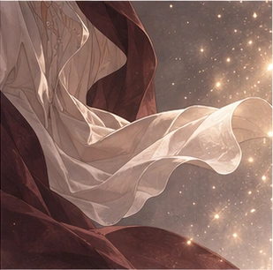
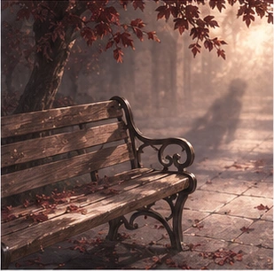
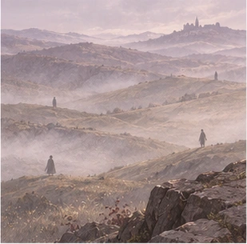
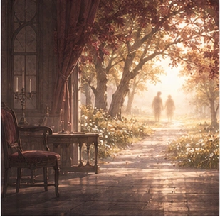

장면 01 / 28
Zueignung
 안개 속 흔들리는 형상
안개 속 흔들리는 형상Ihr naht euch wieder, schwankende Gestalten,
Die früh sich einst dem trüben Blick gezeigt.
 붙잡으려는 손
붙잡으려는 손Versuch ich wohl, euch diesmal festzuhalten?
Fühl ich mein Herz noch jenem Wahn geneigt?
 다가오는 기억
다가오는 기억Ihr drängt euch zu! nun gut, so mögt ihr walten,
Wie ihr aus Dunst und Nebel um mich steigt;

젊은 마음을 흔드는 숨결Mein Busen fühlt sich jugendlich erschüttert
Vom Zauberhauch, der euren Zug umwittert.
 행복했던 날들
행복했던 날들Ihr bringt mit euch die Bilder froher Tage,
Und manche liebe Schatten steigen auf;
 첫사랑과 우정의 그림자
첫사랑과 우정의 그림자Gleich einer alten, halbverklungnen Sage
Kommt erste Lieb und Freundschaft mit herauf;
 미로 같은 삶의 길
미로 같은 삶의 길Der Schmerz wird neu, es wiederholt die Klage
Des Lebens labyrinthisch irren Lauf,

떠나간 이들의 빈자리Und nennt die Guten, die, um schöne Stunden
Vom Glück getäuscht, vor mir hinweggeschwunden.
 사라진 첫 청중
사라진 첫 청중Sie hören nicht die folgenden Gesänge,
Die Seelen, denen ich die ersten sang;
 희미해진 메아리
희미해진 메아리Zerstoben ist das freundliche Gedränge,
Verklungen, ach! der erste Widerklang.
 낯선 군중 앞의 노래
낯선 군중 앞의 노래Mein Lied ertönt der unbekannten Menge,
Ihr Beifall selbst macht meinem Herzen bang,

세상에 흩어진 벗들Und was sich sonst an meinem Lied erfreuet,
Wenn es noch lebt, irrt in der Welt zerstreuet.
 고요한 영혼의 세계를 향한 그리움
고요한 영혼의 세계를 향한 그리움Und mich ergreift ein längst entwöhntes Sehnen
Nach jenem stillen, ernsten Geisterreich,
 바람에 울리는 하프
바람에 울리는 하프Es schwebet nun in unbestimmten Tönen
Mein lispelnd Lied, der Äolsharfe gleich,
 눈물과 부드러워진 마음
눈물과 부드러워진 마음Ein Schauer faßt mich, Träne folgt den Tränen,
Das strenge Herz, es fühlt sich mild und weich;

잃어버린 것이 현실이 되다Was ich besitze, seh ich wie im Weiten,
Und was verschwand, wird mir zu Wirklichkeiten.